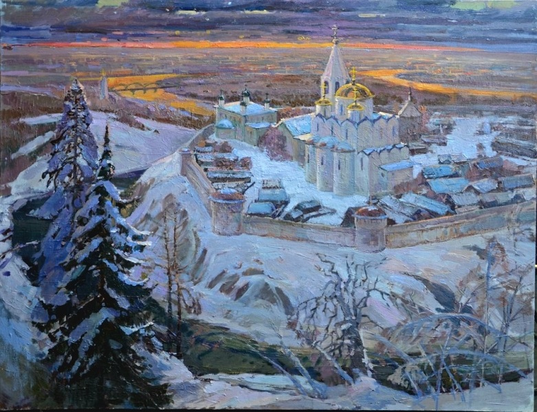

Златоглавая, 2012. Холст, масло, 80х100 см
https://vk.com/wall18580469_7145
Тип: Картина Жанр: Архитектурный пейзаж Местонахождение: Музей НТМК
Изображено: Покровский монастырь, Суздаль (56,43° с.ш.; 40,44° в.д.)